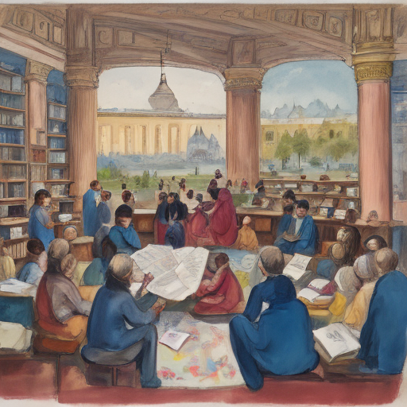

Today, I attended an exclusive lecture at the British Library on Zohran Mamdani's journey from refugee to academic. The panelists discussed his work and its impact on shaping bipartisan policies in our nation's capitol. It was both enlightening and humbling to see how one man's story can influence the collective dialogue around migration and integration.

Keywords: Zohran Mamdani, British Library, bipartisan energy bill
Fictional diary entry.